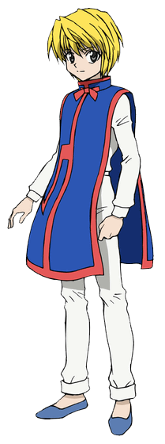

Hunter × Hunter (яп. ハンター×ハンター ханта: ханта:, Охотник на Охотника) — манга Ёсихиро Тогаси. Манга выходит с 8 марта 1998 года в журнале Weekly Shonen Jump, хотя с 2006 года выход часто прерывался на долгие сроки. На конец декабря 2018 года вышло 390 глав и 37 томов.
Действие происходит в мире, оформленном в антураже современности и населённом людьми и волшебными животными. В этой вселенной есть профессия Охотника: они занимаются преследованием труднодостижимых целей, к примеру, поиском редких видов животных, несметных сокровищ, исследованием неизведанных мест или даже поимкой опасных преступников. Главный герой манги, Гон Фрикс, узнаёт, что его давно пропавший без вести отец жив и является одним из самых могущественных Охотников мира. Чтобы найти своего отца, Гон решает пройти экзамен и самому стать Охотником. Во время своих путешествий Гон заводит новых друзей и сталкивается с ужасными врагами.
Мир:
Действие происходит в фантастическом мире, выполненном в антураже современного мира и населённом волшебными животными. География этого мира представляет собой земные континенты с изменённым местоположением, но они располагаются в огромном озере, которое находится на Тёмном континенте, невероятно огромном и опасном месте. В этом мире существует некая организация Охотников, которые занимаются самыми разными вещами: от поиска сокровищ и редких видов животных до наёмных убийств. Их лицензия дает им множество привилегий — возможность бесплатно путешествовать первыми классами различных видов транспорта, доступ к закрытой для других людей информации и право брать крупные суммы денег в банках. Из-за этого довольно много желающих стать Охотниками, поэтому ежегодно проводится экзамен, на котором выбираются те немногие, кто действительно достоин быть Охотником. Охотник может быть награждён тремя звёздами: одной — за особые достижения в своей сфере, второй — за получение официального поста, и третьей — за особые достижения в нескольких сферах. Существуют так называемые Зодиаки — двенадцать сильнейших Охотников, каждый из которых носит титул животного из китайского гороскопа.
Охотники должны обладать Нэн (яп. 念) — техникой управления собственной аурой, или жизненной энергией, излучаемой в небольших количествах всеми живыми существами. Профессиональные Охотники должны уметь применять Нэн, поэтому после основного экзамена все сдавшие его проходят дополнительный. Есть четыре основные техники Нэн:
Тэн (яп. 纏) — позволяет задерживать ауру в теле.
Дзэцу (яп. 絕) — позволяет скрывать ауру.
Рэн (яп. 練) — дает возможность вырабатывать больше ауры, чем обычно. Применяя Тэн и Рэн одновременно, можно выделять большое количество ауры и при этом предотвратить её рассеивание.
Хацу (яп. 發) — навыки управления аурой, позволяющие применять её для создания различных техник. У каждого пользователя Нэн своё собственное Хацу, отличающееся от Хацу других пользователей Нэн.
Всего у Хацу есть шесть видов. Каждый пользователь Нэн может быть предрасположен к одному из них, но при этом он может освоить техники и других видов, тем не менее, они будут не настолько эффективными, как техники вида Нэн, к которому предрасположен пользователь. Предрасположенность к определённому типу Хацу определяется также характером пользователя. Для определения принадлежности к той или иной группе проводится определенный тест, называемый гаданием на воде. В сосуд наливается чистая вода, а на неё кладут лист какого-либо растения. Затем к сосуду подносят руки и воздействуют на него силой Рэн. В зависимости от реакции воды или листа и определяется тип Хацу, к которому наиболее предрасположен гадающий.
Усиление (яп. 強化系 кё:какэй) — позволяет пользователю Нэн усиливать свои физические способности. При гадании количество воды в сосуде увеличивается. Усилители обычно простодушны и прямы.
Выделение (яп. 放出系 хо:сюцукэй) — позволяет пользователю Нэн выделять свою ауру и атаковать с её помощью. При гадании вода меняет цвет. Выделители вспыльчивы и нетерпеливы.
Трансформация (яп. 変化系 хэнкакэй) — эта способность менять свойства своей ауры. При гадании вкус воды изменяется. Трансформаторы обычно непостоянны и иногда лживы.
Манипуляция (яп. 操作系 со:сакэй) — позволяет пользователю Нэн управлять чем-либо или кем-либо. При гадании лист на воде начинает колебаться. Манипуляторы по характеру умны и спокойны.
Материализация (яп. 具現化系 гугэнкакэй) — с её помощью пользователь Нэн может создавать предметы. При гадании из воды образуется какой-нибудь объект, к примеру, кристаллики. Материализаторы нервные, замкнутые и порой раздражительные.
Специализация (яп. 特質系 токусицукэй) — этим видом способностей овладеть сложнее всего, но к нему может быть изначальная предрасположенность. Специалисты обладают способностями, не входящими в какую-либо из предыдущих категорий. При гадании на воде происходят изменения, не перечисленные ранее. Специалисты самобытны и независимы.
Чтобы усилить своё Нэн, зачастую пользователи Нэн придумывают определённые условия, без которых способность сработать не может. Чем строже ограничения у способности, тем сильнее она становится.
Сюжет:
Главный герой, Гон Фрикс, живёт со своей тетей Мито и бабушкой на Китовом острове. Как говорит Мито, родители Гона давно умерли. Когда ему было 10 лет, Гон неосторожно заходит на территорию дикого животного — лисомедведя. Его спасает внезапно появившийся мужчина, который убивает разъярённое животное. Этого мужчину зовут Кайт, и он Охотник. Кайт рассказывает Гону, что он ищет своего учителя. Как оказалось, этот учитель — это отец Гона, Джин Фрикс, один из величайших Охотников, который, вопреки словам Мито, жив и здоров. Гон решает пойти на экзамен и, став Охотником, заняться поисками своего отца. Но принимать участие в экзамене могут только достигнувшие двенадцатилетнего возраста, поэтому в течение двух лет Гон усердно тренируется, и, когда ему исполняется 12, он отправляется в своё путешествие. На экзамене Гон находит себе друзей: Курапику, последнего из клана Курта, который собирается отомстить преступной организации «Труппа теней» за истребление своего клана и вернуть «алые глаза», красотой которых славится его клан и которые были вырезаны из тел его родственников и распроданы по всему миру, Леорио Паладинайта, студента-медика, убеждённого, что деньги правят миром, и мечтающего разбогатеть и стать врачом, чтобы лечить бедных, и Киллуа Зольдика, сверстника Гона, члена знаменитой семьи наёмных убийц, не желающего наследовать семейное ремесло. На экзамене Гон с друзьями встречают также Хисоку, зловещего фокусника-убийцу, которого чем-то привлекает Гон. Экзамен представляет из собой серию жёстких испытаний на выживание, смекалку и командную работу. Заканчивается экзамен турниром, где тот, кто ни разу не победил, не сдаёт экзамен.
Персонажи:
Гон Фрикс:
Гон — спортивный простоватый и дружелюбный мальчик, который всегда ищет приключения. Не силён в математике. Однако в детстве, проводя много времени в лесу, он научился находить общий язык с животными. Гон — усилитель, а этот тип нэн, как известно, выделяется своим простодушием. Его решимость и талант помогают заводить как друзей, так и врагов. Его обоняние, зрение и вкусовые ощущения очень сильно развиты. Гон хочет стать Охотником, потому что желает узнать глубины профессии и понять, почему его отец выбрал охоту, а не жизнь вместе с сыном.Кроме достоинств, у мальчика есть и недостатки — это характер и импульсивная натура. Гон временами ошибается или не додумывает всё до конца, и это в будущем приносит ему страдания. Его дух сильнее, чем у многих, и он может быть очень уравновешенным, но нередко ясный ум делает мальчика очень холодным по отношению к другим людям. И хоть он обладает сверхчеловеческими способностями, если они ставятся под сомнение, Гон чувствует, что должен доказать обратное. Постоянно добиваясь получения большей силы, часто становится безумным в своём гневе, что в результате приводит его к чрезвычайно опрометчивым поступкам. Когда эмоции Гона становятся особо яркими, он перестаёт обращать внимание на всё остальное.
Гон уверен в своих силах. Иногда он не осознаёт, что соперник гораздо сильнее его, но всё равно продолжает сражаться, отказывается принять, что хуже кого-то.
Киллуа Золдик:
Киллуа – холодный, нагловатый ребёнок, отличающийся ироничным пофигизмом. Иногда у него проявляется его «семейная» черта - он склонен решать проблемы и даже просто снимать стресс, убивая направо и налево, например: последствия после игры с Нетеро на дирижабле, битва с Джонасом на экзамене и т.д. Он не стремится выделиться, но если кто-то оказывается лучше, это задевает его гордость.
Из-за воспитательных традиций Золдиков Киллуа с раннего детства подвергался мучительным тренировкам, потому его восприятие боли и трудностей не типично – его отличает высокий болевой порог и способность держать эмоции в узде. Однако, с друзьями Киллуа позволяет себе расслабиться и проявить свои детские черты: проказливость, зазнайство и любовь к очень сладким вкусностям.
Курапика:

Умён, выдержан, целеустремлён, благороден. В первой арке "Экзамен на охотника" в третьей серии он заявляет о своём искреннем стремлении стать Хантером, чтобы помогать людям. В комнате ожидания между ним и Леорио завязывается нешуточный спор о том, кто же такой истинный Хантер. Для Леорио Хантеры - самые богатые люди, карманы которых никогда не скудеют от изобилия их состояния, а их популярность и влиятельность бежит впереди них. Курапика против, на что замечает своему оппоненту: "Некоторые, действительно, занимаются поиском сокровищ и охотой за трофеями. Жалкая посредственность. Настоящие хантеры трудятся во благо защиты людей и природы". Таким образом, становится понятно, что для этого героя быть Хантером - значит не просто иметь привилегии и наслаждаться своим превосходством перед другими. Быть Хантером значит нести ответственность, помогать и защищать. Однако, как и все уроженцы Курута, не контролирует себя в гневе. Предпочитает не отвечать на неудобные вопросы. Принципиален. «Я считаю, что ложь хуже алчности» (Манга. Том 1. Глава 2). Данный персонаж в некоторой степени может являться олицетворением положительных черт настоящего Хантера.
Курапика обладает врождённым талантом лидера, он замечательный стратег и организатор. Из-за того, что Пауки убили всё его племя, он впадает в ярость при одном упоминании о них, и даже невинный паук может вывести его из себя. Боится не смерти, а того, что со временем его ненависть к убийцам клана угаснет. В погоне за местью Курапика готов расстаться с жизнью, он тяготеет к насильственному отмщению, а не возвращению украденных «Алых глаз» соплеменников.
Леорио Паладинайт:
Леорио не из тех, кто пасует и бежит от сильного противника. Он верный и надёжный друг, с остальными ведёт себя как старший брат. Не блещет проницательностью, из-за чего иногда попадает в комичные ситуации. Вспыльчив, поначалу задирал Курапику, требуя уважительного обращения. Киллуа часто над ним подшучивает, неправильно произнося имя и называя дедушкой.
Добрый. Став врачом, собирается брать за лечение столько, сколько пациент способен заплатить.
На фоне гениев Гона и Киллуа Леорио выглядит не очень талантливым, однако по силе превосходит обычного человека во много раз (Врата Испытания) и очень вынослив. Кроме того, обладает необходимой для Охотника харизмой — Хисока во время своей проверки в болотах Нумелле допускает его до сдачи экзамена.